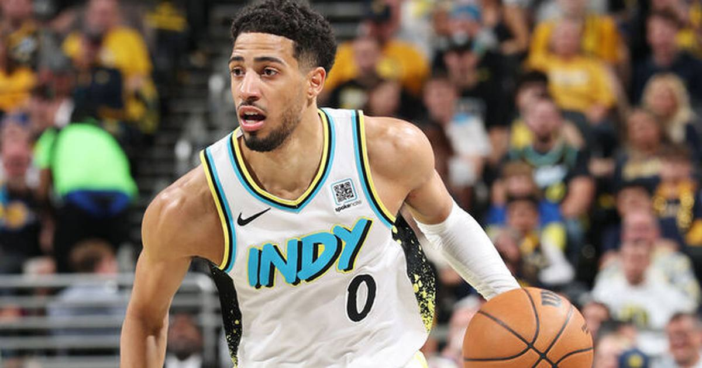

Haliburton scores 24 in return to OKC after Achilles tear
Tyrese Haliburton dropped 24 points in 18 minutes in his first game back at Paycom Center since tearing his Achilles in Game 7 of the 2025 Finals — and the Pacers pushed the Thunder to overtime.

Disclosure: this post contains affiliate links. I earn a commission on qualifying purchases.
Tyrese Haliburton is back — and he picked the most emotional stage in the NBA to announce it. In his first game at Paycom Center since tearing his Achilles in Game 7 of the 2025 Finals, Haliburton scored 24 points in 18 minutes on 9-of-14 shooting on Tuesday night. The game itself went to overtime, where the Thunder edged the Pacers 114-112.
The comeback game
Haliburton missed the entire 2025-26 season rehabbing the injury. His return to Oklahoma City — the building where his title run ended — could have gone any number of ways. Instead, he looked like himself from the opening tip: confident, efficient, and completely unbothered by the setting.
He needed just 18 minutes to get to 24 points, shooting 64% from the floor. For a player coming off an Achilles tear and a full season on the shelf, that kind of efficiency in the first building he returned to is the headline.
What the night means for Indiana
• The recovery is real. An 18-minute, 24-point burst against the defending Finals opponent is the strongest possible signal that the rust is gone — or close to it.
• Preseason context matters. This was an October tune-up, not a regular-season game. But the Pacers didn't bring Haliburton back slowly; they let him play his game, and his game showed up.
• The matchup itself. Facing the Thunder — the team that won Game 7 after he went down — in an overtime game only adds to the symbolism. Indiana pushed them all night without their full rotation at full throttle.
The box score
Points: 24
Minutes: 18
FG: 9-of-14
Final: Thunder 114, Pacers 112 (OT)
Sources: OKC Thunder Wire game recap, Yardbarker on the return.
Watch
Source: Tyrese Haliburton and Ivica Zubac Shine in Preseason Action in Oklahoma City | FULL Game Highlights — Indiana Pacers (YouTube). The video covers Haliburton's 24-point, 4-three-pointer night (24 pts, 4 3PM, 3 AST, 2 BLK) plus Ivica Zubac's 13-point, 13-rebound double-double in the Pacers' 114-112 overtime loss to the Thunder.
Gear up: [Fanatics](https://fanatics.93n6tx.net/WOLjqe) via Fanatics